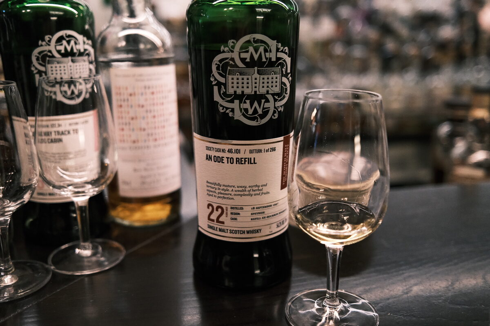

Glenlossie "An ode to refill" 1997 SMWS 46.101 22 years 54.3% (refill ex-bourbon hogshead)
By my count, this is whisky review 100. Triple digits! Totally unintended, but let’s celebrate in the most appropriate way: with an ode to refill (casks).
Colour Gold.
Nose White fruits: nectarines and peaches. Waxy pears and apples. Lime juice. Honey. Muesli, malty. Elegant. A waft of peppermint and menthol. Fresh raspberry sorbet. A drop of olive oil. With water, caramel, more candlewax. Heady. Pawpaw. Rockmelon.
Palate Thick and oily. Malt bomb (really, the best sort). Cereals of all description, muesli. Herbaceous: rosemary, mint, menthol. Orange and lemon peel oil. Impressive clarity. Clean malt. With water, a little tropical, plus watermelon.
Finish Big herbaceous finish: menthol and eucalyptus. Malty as hell. Porridge and congee. A touch medicinal, but not peat. Long and warming. Unreal. Apricot delight, strawberries and cream. Hoggie magic. With water, more herbal and grassy notes, real aperitif qualities. A splash of a nice filter coffee (nb. yes, I was drinking a lot of coffee).
Comments Such a clean, angular, elegant malt. An ode to refill is correct. incredible complexity and balance. Three cheers to Glenlossie, our friends in America, and to those first fill malts (RIP). Oh, and SMWS I suppose. 90/100.

Posted by Dominic on 14 Jun 2021